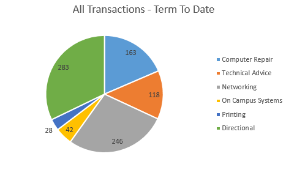

connect_error) {
die("Connection failed: " . $conn->connect_error);
}
$sql = "SELECT * from $tablename
WHERE Location='Village 1'
;"
$result = $conn->query($sql);
if ($result->num_rows > 0) {
// output data of each row
while($row = $result->fetch_assoc()) {
echo "id: " . $row["ID"]. " - Name: " . $row["timestamp"]. " " . $row["location"]. "
";
}
} else {
echo "0 results";
}
$conn->close();
?>
|
DC Service Desk
|
EC2 Service Desk
|
|

|
|
|
Run V1 Report
|
Run DC Report
|
Run EC2 Report
|